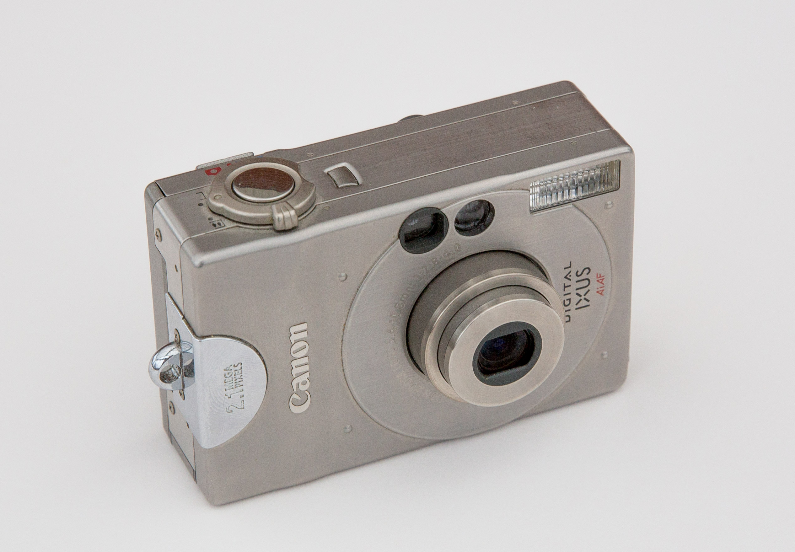

Ben Deane / @ben_deane
CppCon / Tuesday September 24th, 2018
Motivation
The obvious first question:
Why should we use operators at all?
Why?
- for concision?
- for performance?
- to take advantage of ADL?
Why?
Because they convey meaning that named functions don't.
a + b;
Guideline 1
When defining our own operators, we are well-advised to stick to
conventional or intuitive properties.
The History Part
Or, counterpoint to Guideline 1.
Because things haven't always been this way.

By Joffboff - Own work, CC BY-SA 4.0, https://commons.wikimedia.org/w/index.php?curid=56389131
I 3D-printed a Save Icon!

What is "convention" in history?
What we think of as axiomatic - mathematical notation - is actually changing all the time.
- Oresme
- Recorde
- Oughtred
- Leibniz
What does this mean?
/
Are you sure?
What do these mean?
% ^ ~ |
These are really arbitrary and only with us since about 1970.
Revised Guideline 1
When defining our own operators, we are well-advised to stick to conventional
or intuitive properties, where they exist.
Corollary: study history.
A History of Mathematical Notations by Florian Cajori